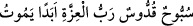
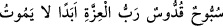

kurtaracak biri yok mu?” dedi. Meleklerin en hayırlısı ve başkanı: “Ey Mûsâ, istediğin
şey için sabırlı ol. Gördüklerin, göreceklerine nisbetle çok azdır.” dedi.
Sonra Allah Teâlâ üçüncü semada bulunan meleklere, Mûsâ (a.s.)’ın yanına
inmelerini emretti. Onlar da akbabalar sûretinde büyük bir çığlıkla onun yanına geldiler.
Büyük bir ordunun çıkardığı gürültü gibi ağızlarından tesbih ve takdis sesleri geliyordu.
Renkleri ateş alevi gibiydi. Mûsâ (a.s.) bunlardan da çok korktu. Nefesi daraldı. Artık
hayatından ümidini kesti. Bunun üzerine meleklerin hayırlısı ona: “Ey İmran oğlu,
olduğun yerde dur ki sabredemeyeceğin şeyleri göresin.” dedi.
Daha sonra Hak Teâlâ dördüncü semadaki meleklere inmelerini emir buyurdu. Onlar
da indiler. Renkleri alev rengi gibi diğer yerleri de kar gibi beyazdı. Gayet yüksek sesle
Allah’ı tesbih ve takdis ediyorlardı. Mûsâ (a.s.)’a daha önce gelenlerden hiçbiri, onlara
benzemiyordu. Mûsâ (a.s.)’ın dizleri titreyerek birbirine vurmaya, kalbi korkuyla
çarpmaya başladı. Ağlaması şiddetlendi. Meleklerin reisi ona dedi ki: “Ey İmran oğlu,
istediğin şey için sabırlı ol. Gördüklerin görmediklerine nisbetle çok azdır.”
Sonra Cenab-ı Hak beşinci semadaki meleklere inmelerini emretti, onlar da indiler.
Üzerlerinde yedi renk vardı. Mûsâ (a.s.) onlara tam olarak bakamadı. Onlar gibisini hiç
görmemiş, onların sesleri gibi bir ses duymamıştı. İçi korkuyla doldu, hüznü şiddetlendi
ve ağlaması arttı. Meleklerin hayırlısı ona: “Ey İmran oğlu, yerinde dur. Daha
sabredemeyeceğin nice şeyler göreceksin.” dedi.
Sonra Allah altıncı semadaki meleklere emretti, onlar da indiler. Onlardan her bir
meleğin elinde uzun hurma ağacı gibi ve ışığı güneşten daha parlak birer ateş vardı.
Elbiseleri ateş alevi gibiydi. Hepsi bir ağızdan seslerinin bütün şiddetiyle “
” (O her türlü eksiklikten münezzeh ve çok uzaktır, izzet sâhibi
olan Rab ebediyyen ölmez.) diyorlardı. Her bir meleğin başında dörder tane yüz vardı.
Mûsâ (a.s.) ağalayarak ve “Rabb’im beni hatırla, kulunu unutma.” diyerek meleklerle
beraber tesbih etmeye başladı. Meleklerin büyüğü dedi ki: “Ey İmran oğlu, istediğin şey
için sabret.”
Sonra Cenab-ı Hak yedinci semada bulunan Arş’ının yüklenilmesini emredip
meleklere onu Mûsâ (a.s.)’a göstermelerini istedi. Arş’ın nuru gözükünce Rabb’in
azametinden dolayı dağ yarıldı. Göklerdeki bütün melekler yüksek sesle “
” demeye başladılar. Dağ ve üzerindeki tüm ağaçlar
parçalanıp yerle bir oldu. Mûsâ (a.s.) da cansız olarak yüz üstü yere düştü. Allah Teâlâ,
rahmeti ile ona ruh gönderdi. Ruh onu sarıp örttü ve Mûsâ (a.s.) yanmasın diye üzerinde
bulunduğu taşı çevirerek kubbe haline getirdi. Sonra doğum yapan bir annenin
doğurduğu çocuğu tutup kaldırdığı gibi Mûsâ (a.s.)’ı yerinden kaldırdı.
Mûsâ (a.s.) kalktığında tesbih ediyor ve “Rabb’im sana inandım. Dünyada hiç
kimsenin seni göremeyeceğini, görenin de yaşayamayacağını anladım. Meleklerine
bakanın bile kalbi yerinden çıkar. Sen çok büyüksün. Meleklerin de büyük. Sen her
şeyin Rabbi meliklerin Meliki’sin. Hiçbir şey seni tehdit edemez. Hiçbir şey sana karşı